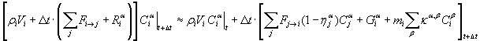
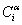
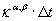
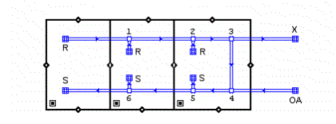
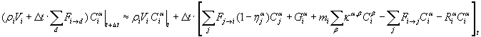
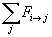
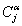

Several possible solutions for equation (7) can be characterized by the choice of dt to determine the rate of gain or loss. CONTAM has traditionally chosen dt = Dt. Equation (7) becomes:
|
 |
(8) |
All concentrations

at time t+Dt are functions of various other concentrations also at t+Dt. This is the standard implicit method, and it requires that a full set of equations (8) must be solved simultaneously.The number of equations, N, equals the number of species times the number of control volumes. In a traditional Gauss elimination (or LU decomposition) solution the computation time is proportional to N3, making it impractical for large problems. CONTAM offers three solution methods which take advantage of matrix sparsity to handle cases with large numbers of equations. These are a direct skyline algorithm, an iterative biconjugate gradient (BCG) algorithm, and an iterative successive over relaxation (SOR) algorithm. (LU decomposition is provided only for testing and benchmarking.) The skyline algorithm is very fast for problems of intermediate size but can be slow for large problems. The SOR algorithm requires much less memory and may be faster for large problems unless there are convergence difficulties. In such cases try the BCG solution, although it may also experience convergence difficulties. It can be useful to test the different methods to determine which will give optimum performance before doing a long transient simulation.
A more accurate solution can be obtained by choosing Dt = Dt /2 which means average conditions during the time step. This has been implemented in CONTAM by a trapezoidal integration which still requires solving the full set of simultaneous equations.
We can also choose Dt = 0. In this case equation (7) becomes:
|
|
(9) |
Every concentration at time t+Dt is a function of various other known concentrations at time t. This is the standard explicit method which has the computational advantage of not requiring the solution of simultaneous equations. That advantage is offset by instability under some conditions. That is, the concentrations at successive time steps may diverge wildly from the analytically correct solution. Stability is determined by the magnitudes of the coefficients in equations (7). For example, when the sum of the flows into or out of the c.v. in one time step is greater than the mass of air in the c.v., the solution becomes unstable, that is, values at successive time steps begin to oscillate around the true solution and eventually reach impossible values. Instability will also result when

or exceed a certain magnitude. The standard implicit method is stable at all time steps.
exceed a certain magnitude. The standard implicit method is stable at all time steps.
The stability question is so important that it is useful to review the time scales that can be expected in the normal operation of buildings. ASHRAE indicates that the air exchange rate to condition and ventilate rooms should be less than 12 air changes per hour in nearly all commercial applications. [ASHRAE 1999b, p. 3.2 Table 1 - General Design Criteria] This corresponds to a stability limit for the explicit method of 1/12 h, or 5 min. In CONTAM the volume of a junction is half the sum of the volumes of the duct segments meeting at the junction. A junction between two 2 m long duct segments where the air is flowing at a velocity of 2 m/s would have a stability limit of 1 second. Smaller limits are likely to occur because of shorter duct segments or higher velocities.
In early versions of CONTAM it was anticipated that the processes being modeled would require time steps down to about 5 minutes. The very short stability limit for modeling the ductwork drove CONTAM to use an implicit solution where the execution time for relatively few time steps was less than doing many shorter times steps using the explicit solution. The recent addition of control system modeling and the need to track quick contaminant releases both require time steps no longer than a few seconds. We will therefore reconsider use of the explicit model for the ducts.
The following figure shows a CONTAM sketchpad representation of the typical features of a very simple building and its air handling system. The duct icons indicate the normal direction of flow. The ductwork consists of a return duct with terminals (R) in each room, an exhaust to ambient (X), a path for recirculation, an outdoor air intake (OA), and a supply duct with terminals (S) in each room.

Figure – Schematic of a basic air handling system
When the simulation time step is sufficiently short, the explicit method can be used to compute the contaminant concentrations in the zones. That same time step can be used with the implicit method to compute the concentrations in the duct junctions if the calculations are performed in the proper sequence where equation (8) is solved one node at a time following the direction of airflow. The following discussion will show how the duct junction concentrations can be solved implicitly, thereby avoiding stability problems, and without solving simultaneous equations, thereby producing a fast computation.
The process begins by computing all airflows based on conditions known at time t. The contaminant calculation sequence then begins by using a modification of equation (9) to compute the concentrations at time t+Dt in all zones:
|
 |
(10) |
In equation (10) the flows out of the zone are divided into two parts

, flows to other zones, and
 , flows into duct junctions through return terminals or leaks,
, flows into duct junctions through return terminals or leaks,
to conserve contaminant mass when computing concentrations at the return terminals.
The concentrations in the return terminals (R and OA) are then computed with a simplified form of equation (8), because sources, sinks, and reactions are not modeled in ducts, although these features could be added in the future.

|
(11) |
This calculation is particularly simple for terminals because there is only one airflow into each return terminal and an equal airflow out into the duct network. The concentration in the flow into the terminal,

at time t+Dt, comes from equation (10) for the surrounding zone, j. Once all return terminal concentrations have been computed the upstream concentrations are known for both ducts meeting at the left-most junction (# 1) in the return duct, and equation (11) can be solved directly because all concentrations on the right side of the equation are known. Once the junction #1 concentrations have been computed all upstream concentrations are known for the next junction to the right (# 2) along the return duct and its concentrations can then be computed. This process continues around the ductwork until the concentrations at all junctions and all supply terminals have been computed. This implicit calculation of the concentrations in the duct junctions is unconditionally stable, so overall stability is determined by conditions in the zones.CONTAM 2.4 adds this process calling it the short time step method (STS).
Reactions may include coefficients that lead to instabilities for an explicit simulation. Very fast reactions would produce such coefficients. Therefore, the STS method processes reactions by an implicit calculation involving only the contaminants in the c.v. after all other calculations have been performed for the time step.